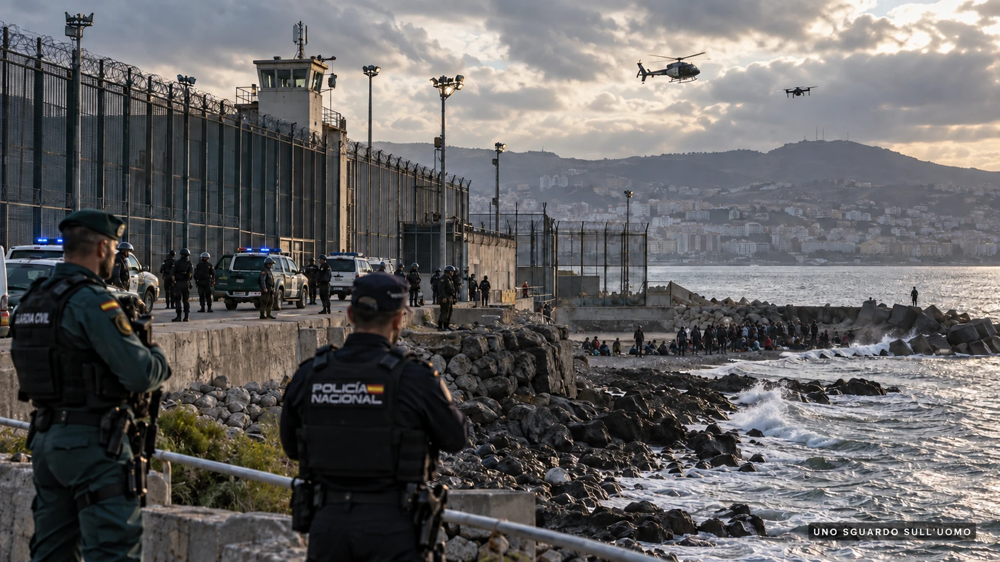

In questo dossier
- L’Europa cambia passo
- La Spagna dice no
- Ceuta: quando il problema bussa a casa
- Due piedi in una scarpa
- La deterrenza che Sánchez conosce già
- Il telefonino cambia la frontiera
- Il viaggio non è gratis: quando parte anche il debito
- Il punto politico: dall’accoglienza alla repressione di frontiera
- Il bastian contrario
- La frontiera della coerenza
- Fonti principali
- Nota di metodo
L’Europa cambia passo
Il 1° ottobre 2026 il Consiglio dell’Unione europea (UE) ha dato il via libera definitivo al nuovo regolamento sui rimpatri. Non è una nota a margine del Patto europeo su migrazione e asilo. È un cambio di passo: nasce un sistema comune di ritorno, arriva l’ordine europeo di rimpatrio e, soprattutto, gli Stati membri potranno creare centri di ritorno fuori dall’Unione, i cosiddetti return hub, attraverso accordi con Paesi terzi.
La norma riguarda persone che hanno già ricevuto una decisione di rimpatrio e non hanno più diritto a rimanere nell’Unione. I minori non accompagnati sono esclusi dagli accordi sui return hub e il Paese terzo dovrà rispettare gli standard internazionali sui diritti umani e il principio di non-refoulement.
Il dato che spiega la svolta lo fornisce lo stesso Consiglio: circa due persone su tre tra quelle cui viene ordinato di lasciare l’Unione, oggi, non se ne vanno davvero. In altre parole, il problema europeo non è soltanto stabilire chi abbia diritto a restare. È riuscire a rendere effettiva la decisione quando quel diritto non c’è più.
Arrivare in Europa non significherà più necessariamente restare in Europa.
Il voto finale racconta quanto la direzione sia ormai condivisa: 23 Paesi favorevoli, un solo voto contrario, quello della Spagna; il Belgio si è astenuto, mentre Irlanda e Danimarca non hanno partecipato al voto. Madrid è rimasta sola.
La Spagna dice no
Il governo di Pedro Sánchez non ha nascosto la propria opposizione. Già a giugno il ministro dell’Interno Fernando Grande-Marlaska aveva definito “ferma” la contrarietà spagnola ai centri di ritorno in Paesi terzi, sollevando dubbi sulla loro legalità e proporzionalità. Madrid contesta l’allungamento della detenzione, teme contenziosi e considera problematico affidare a Stati terzi una parte della gestione dei rimpatri.
Il governo spagnolo insiste su un approccio che definisce garantista e rispettoso dei diritti dei migranti e dei richiedenti protezione internazionale. Allo stesso tempo, però, chiede un sistema europeo dei rimpatri più efficace e procedure capaci di accelerare le decisioni nei momenti di crisi. È proprio qui che il quadro comincia a diventare politicamente interessante.
Perché la Spagna non è affatto contraria alla deterrenza in quanto tale. È contraria a una determinata forma di deterrenza: quella che sposta il migrante in un hub lontano, affidando a un altro Paese parte del problema. Quando invece la pressione migratoria entra direttamente attraverso una frontiera spagnola, Madrid utilizza strumenti molto più immediati.
Ceuta: quando il problema bussa a casa
Tra il 30 e il 31 luglio 2026 Ceuta è stata investita da un ingresso eccezionale di migranti provenienti dal Marocco. Il governo spagnolo ha reagito rafforzando la frontiera, aumentando la presenza di Policía Nacional e Guardia Civil, ricorrendo alle Forze Armate e impiegando strumenti di sorveglianza e controllo. Parallelamente ha accelerato le procedure di assistenza, identificazione e ritorno.
È Sánchez stesso a rivendicare il risultato: in 72 ore circa 63.000 persone erano tornate in Marocco, oltre il 90 per cento di coloro che erano entrati durante la crisi. Il presidente del governo ha definito l’operazione uno dei processi di ritorno più rapidi della storia europea recente.
La Spagna che a Bruxelles teme che un return hub comprima eccessivamente le garanzie è quindi la stessa Spagna che, quando la frontiera di Ceuta viene travolta, indica come priorità il rafforzamento fisico del confine e il ritorno rapido di chi non ha diritto a restare.
A Bruxelles: no ai return hub. A Ceuta: frontiera rafforzata e ritorni in 72 ore.
Non serve forzare la contraddizione. È già nei fatti. Uno dei governi più spostati a sinistra dell’Unione europea, guidato dal Partido Socialista Obrero Español (PSOE) e sostenuto anche da Sumar, formazione della sinistra radicale, difende a Bruxelles un’impostazione garantista e, nello stesso tempo, applica una politica di frontiera durissima quando l’interesse nazionale viene colpito direttamente.
Due piedi in una scarpa
La spiegazione spagnola è anche geografica e politica. Ceuta e Melilla non sono un problema astratto: sono territorio spagnolo sul continente africano, a contatto diretto con il Marocco. Per Madrid il rimpatrio più rapido non passa necessariamente da un centro in Rwanda o in Uganda. Passa, quando possibile e giuridicamente consentito, dalla frontiera che separa le enclave dal Paese da cui molte persone sono appena arrivate.
Da questo punto di vista, portare un cittadino marocchino in un return hub africano può essere meno utile, più costoso e più complicato che riportarlo oltre il confine. La Spagna ha quindi un interesse nazionale diverso da quello di Stati che non dispongono di una frontiera terrestre diretta con i principali Paesi di transito.
Il problema politico nasce quando questa differenza di interessi viene presentata come differenza di principi. Perché Madrid non dice soltanto: “per noi i return hub sono inefficienti”. Li contesta anche sul terreno della legalità, della proporzionalità e delle garanzie. Poi, quando Ceuta entra in emergenza, chiede alla stessa Unione procedure più rapide per ritorno e protezione internazionale e rivendica la solidità del proprio controllo di frontiera.
È qui che l’immagine dei due piedi in una scarpa diventa più di una battuta. La Spagna vuole restare dalla parte del garantismo europeo e, contemporaneamente, conservare la massima libertà possibile quando deve difendere Ceuta e Melilla. È una posizione politicamente comprensibile. Ma proprio per questo va raccontata per intero.

La deterrenza che Sánchez conosce già
C’è poi un passaggio che rende il dibattito ancora più interessante. A settembre Sánchez ha spiegato che, prima della crisi di luglio, sui social si era diffusa una versione distorta di una sentenza secondo la quale chi fosse arrivato a nuoto a Ceuta non sarebbe stato respinto. Secondo il presidente spagnolo, i fatti dimostrarono rapidamente il contrario: nove persone su dieci rientrarono in Marocco in poche ore o pochi giorni.
Sánchez aggiunse che, dopo quella esperienza, circa 200 persone al giorno stavano tornando volontariamente da Ceuta al Marocco perché avevano capito che l’informazione circolata sui social era falsa.
Questa è deterrenza. Non serve chiamarla in un altro modo. Un comportamento cambia perché cambia l’aspettativa sulle conseguenze. Se la convinzione è “riesco ad entrare e poi rimango”, il tentativo conserva un premio. Se la convinzione diventa “riesco ad entrare, ma posso essere rimandato indietro subito”, il calcolo cambia.
Ed è esattamente la logica che rende politicamente interessanti i return hub. Il loro effetto potenziale non si misura soltanto con quante persone riusciranno materialmente a ospitare. Si misura anche con il messaggio che producono prima della partenza: essere riusciti ad arrivare sul territorio europeo potrebbe non garantire più la permanenza sul territorio europeo.
Il telefonino cambia la frontiera
Qui entra un elemento normalmente trattato come dettaglio e che invece può diventare parte del meccanismo: la quasi totale connessione digitale di chi viaggia. Lo smartphone non dimostra affatto che chi migra sia ricco. Dimostra un’altra cosa: il viaggio è connesso in tempo reale alle famiglie, agli amici, alle comunità e alle reti che stanno dall’altra parte.
Il Consiglio dell’UE, proprio nella riunione del 1° ottobre, ha discusso della necessità di rafforzare il monitoraggio dei social media per anticipare le crisi migratorie. Non è casuale. Le informazioni sulle rotte, sulle frontiere, sui controlli e sulle possibilità di restare viaggiano rapidamente.
La conseguenza politica è evidente. Una campagna istituzionale può essere ignorata. Una telefonata o un messaggio di chi è partito, ha pagato migliaia di euro, è arrivato e racconta di essere stato trasferito fuori dall’Unione ha un peso diverso. Non sappiamo ancora quale sarà l’effetto dei return hub, perché non sono ancora operativi. Ma sappiamo già che il passaparola digitale può trasformare una decisione amministrativa in un segnale deterrente molto più largo del numero delle persone direttamente coinvolte.
Il viaggio non è gratis: quando parte anche il debito
La deterrenza pesa ancora di più se il viaggio non viene finanziato soltanto con denaro disponibile. L’Organizzazione internazionale per le migrazioni (IOM) documenta forme di pagamento “a credito”: trafficanti o intermediari anticipano il costo del percorso o permettono di saldarlo successivamente, anche dopo l’arrivo. Il rischio è che il debito si trasformi in sfruttamento o debt bondage.
Altri rapporti IOM descrivono famiglie che si indebitano, parenti chiamati a pagare e sistemi in cui, quando il migrante non dispone del denaro, la pressione economica viene trasferita sulla famiglia rimasta nel Paese d’origine. Non esiste un unico modello e non possiamo affermare che ogni viaggio funzioni così. Ma è sufficiente per capire che, in molti casi, partire significa mettere in gioco molto più del prezzo di un biglietto.
Quando una famiglia mette insieme anni di risparmi, vende beni, chiede prestiti o accetta un debito per finanziare il viaggio di una persona, il valore atteso dell’arrivo in Europa diventa decisivo. Se quel valore diminuisce perché la permanenza non è più data per acquisita, cambia anche la convenienza economica della partenza.
La deterrenza non deve rendere impossibile partire. Deve rendere molto meno conveniente pagare per partire.
Il punto politico: dall’accoglienza alla repressione di frontiera
La Spagna di Sánchez mostra quindi due facce della stessa politica. Da una parte difende un modello europeo che attribuisce grande peso alle garanzie, alla protezione internazionale e alla diffidenza verso l’esternalizzazione dei rimpatri. Dall’altra, quando Ceuta diventa il punto di rottura, utilizza tutte le leve dello Stato per ristabilire il controllo della frontiera e rendere rapidamente reversibile l’ingresso irregolare.
La contraddizione non sta nell’uso della forza in sé. Ogni Stato ha il diritto e il dovere di controllare le proprie frontiere nel rispetto della legge. La contraddizione sta nella distanza tra il linguaggio politico utilizzato quando la questione viene discussa come principio europeo e quello adottato quando il problema diventa immediatamente spagnolo.
A Bruxelles prevalgono le parole “legalità”, “proporzionalità”, “garanzie”. A Ceuta entrano in scena confine, polizia, Guardia Civil, Forze Armate, identificazione e ritorno. È il passaggio dalla sinistra dell’accoglienza alla sinistra della repressione di frontiera: non perché la Spagna abbia improvvisamente cambiato ideologia, ma perché l’interesse nazionale ha imposto una priorità diversa.
Ed è proprio questo che rende politicamente fragile il no spagnolo ai return hub. Madrid può contestarne costi, legalità e utilità. Ma ha molta più difficoltà a presentare la propria posizione come rifiuto della deterrenza, perché la deterrenza è già uno degli strumenti che utilizza alla propria frontiera.
Il bastian contrario
La posizione spagnola ha argomenti reali. I return hub possono aprire contenziosi complessi; trasferire persone in Stati terzi significa affidarsi a governi con sistemi giuridici, capacità amministrative e standard di tutela differenti. Il regolamento europeo impone il rispetto dei diritti fondamentali e del non-refoulement, ma trasformare queste garanzie in controllo effettivo fuori dal territorio dell’Unione sarà una delle prove più difficili.
C’è poi un problema economico. Un centro esterno può essere costoso e coinvolgere numeri relativamente limitati. C’è infine una questione politica: accordi sui migranti possono trasformarsi in strumenti di pressione nelle relazioni con Paesi terzi, soprattutto quando questi diventano indispensabili per fermare partenze o accettare persone rimpatriate.
Sono obiezioni serie. Ma non cancellano il punto centrale: misurare i return hub soltanto in base al numero di persone trasferite potrebbe essere fuorviante. Se lo strumento modifica l’aspettativa di chi deve ancora partire, una parte del suo effetto avverrebbe prima ancora dell’ingresso in Europa. Oggi non possiamo sapere quanto sarà grande quell’effetto. Possiamo però riconoscere che la deterrenza è già parte della politica migratoria europea e che la stessa Spagna la utilizza quando la pressione arriva a Ceuta.
La frontiera della coerenza
Il voto del 1° ottobre non racconta semplicemente una Spagna più umanitaria contrapposta a un’Europa diventata improvvisamente ostile. Racconta interessi differenti e, soprattutto, strumenti differenti.
Per molti Stati europei il return hub è il tentativo di rendere credibile un principio finora spesso rimasto sulla carta: chi non ha diritto a restare deve poter essere effettivamente rimpatriato. Per la Spagna, che dispone di Ceuta e Melilla e di una cooperazione diretta con il Marocco, la risposta può essere molto più vicina, più rapida e più conveniente.
Madrid può quindi votare contro il centro di ritorno lontano e, nello stesso tempo, difendere una frontiera durissima a pochi metri dal Paese di transito. Può rivendicare garanzie quando il problema è europeo e invocare procedure accelerate quando la crisi è nazionale.
È legittimo. Ma va chiamato con il suo nome: due piedi in una scarpa.
E mentre la Spagna cerca di tenerli entrambi, l’Unione europea ha già imboccato un’altra strada. Per la prima volta la politica comune dei rimpatri prova a colpire non soltanto ciò che accade dopo l’arrivo, ma anche l’aspettativa che rende conveniente partire. Se funzionerà lo diranno i prossimi anni. Politicamente, però, il messaggio è già cambiato: arrivare non basta più.
FONTI PRINCIPALI
- Consiglio dell’Unione europea — “Council adopts new rules on return for those with no right to stay in the EU”, 1 ottobre 2026.
- Consiglio dell’Unione europea — risultato ufficiale del voto sul regolamento relativo al sistema comune di rimpatrio, 1 ottobre 2026.
- Consiglio dell’Unione europea — “Council and Parliament reach deal on returns of illegally staying third-country nationals”, 1 giugno 2026.
- Ministerio del Interior de España — dichiarazioni di Fernando Grande-Marlaska contro i return hub per dubbi di legalità e proporzionalità, 4 giugno 2026.
- Ministerio del Interior de España — richiesta di accelerare procedure di ritorno e protezione internazionale nelle crisi migratorie, 17 settembre 2026.
- La Moncloa — dichiarazioni di Pedro Sánchez sulla crisi di Ceuta, 3 settembre 2026.
- La Moncloa — intervista di Pedro Sánchez a El Intermedio, 14 settembre 2026.
- Consiglio dell’Unione europea — Consiglio Giustizia e Affari interni del 1° ottobre 2026, discussione su monitoraggio dei social media e allerta migratoria.
- Corte europea dei diritti dell’uomo — N.D. e N.T. contro Spagna, Grande Camera, 13 febbraio 2020.
- International Organization for Migration — “Migrant Smuggling on the Central Mediterranean Route”, studio sui sistemi di pagamento e sul debito.
- Organizzazione internazionale per le migrazioni (IOM) e Fondo delle Nazioni Unite per l’infanzia (UNICEF) — “Harrowing Journeys”, su debito, richieste di denaro alle famiglie e rischi di sfruttamento.
- Notizie Geopolitiche — “Ue, i ministri approvano i centri di espulsione fuori dall’Unione: solo la Spagna vota contro”, 2 ottobre 2026.
NOTA DI METODO
Il dossier distingue i fatti documentati dalle valutazioni editoriali. I dati sul regolamento europeo, sul voto del Consiglio e sulle misure adottate dalla Spagna a Ceuta provengono da fonti istituzionali. Le considerazioni sulla funzione deterrente dei return hub, sul loro possibile impatto sul calcolo economico della partenza e sulla coerenza politica del governo spagnolo costituiscono la posizione giornalistica di UNO SGUARDO SULL’UOMO. Non vengono presentate come effetti già dimostrati di uno strumento che, al momento della pubblicazione, non è ancora operativo.